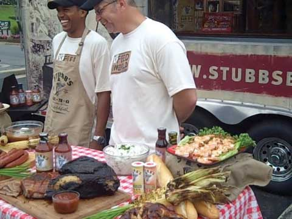
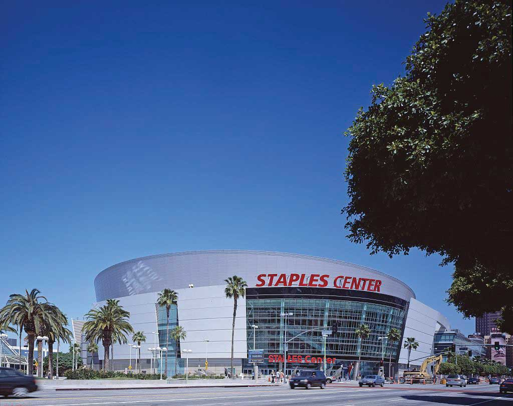
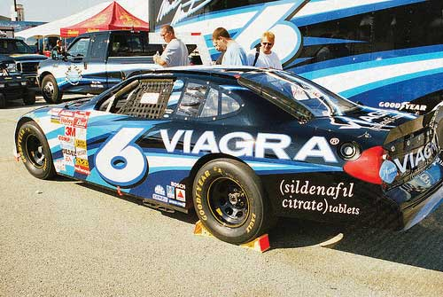

You just finished reading a great newspaper story about a local restaurant even though you know the company has experienced several lawsuits and many customer complaints. The news story makes the restaurant sound like a great corporate citizen and the best place to eat in town. Sometimes a company gets “free” publicityPublicized information such as news stories about products and services, people, and organizations. such as news stories or reviews about its products and services in the mass media, even though the organization has no control over the content of the stories and might not even know about their publication. How did a restaurant with so many complaints manage to get such a great story written about it? How did it get good coverage when it might not be deserved? Perhaps the restaurant used part of its promotion budget to pay for public relations efforts to generate positive stories and positive publicity.
Public relations (PR)The process of creating a positive image for a company, an offering, or a person via publicity. includes information that an organization wants its public (customers, employees, stakeholders, general public) to know. PR involves creating a positive image for a company, an offering, or a person via publicity. PR has become more important in recent years because there are now so many media outlets people pay attention to, including YouTube, social networking sites, and blogs. It’s pretty easy for anyone to say anything about a company in public forum. Indeed, publicity is a double-edged sword; it can result in negative news, such as a poor review of a movie, restaurant, or car, or positive news. Organizations work hard to get favorable news stories, so while publicity sounds free, building relationships with journalists does cost money. Just like advertising, public relations, sponsorships, and social media are critical components of the promotion mix and promotion budget for many firms.
Sponsorships (the financial support of different events, buildings, and activities) often create a lot of publicity. As such, more organizations are realizing the benefit of allocating part of their promotion budget to sponsorships. While most people associate sponsorships with sports, companies also sponsor things such as entertainment, buildings, events, and philanthropic projects, as well as brands and products on social media. Expenditures on sponsorships in North America are estimated to be about $18.9 billion in 2012.Joe Mandese, “Sponsorship Loses Steam, but Continues to Outpace Ad Growth,” Normbondmarkets.com, January 12, 2012, http://normbondmarkets.com/sponsorship-loses-steam-but-continues-to-outpace-ad-growth/. While sports dominate the use of sponsorships, sponsorship of entertainment such as concerts and theme parks continues to grow. Social media sponsorship, which occurs when companies pay social media publishers to “talk” (write blogs or post updates) about things such as their brands, movies, products, or contests also continues to grow. Cash-sponsored social media providers are expected to exceed $65 million by 2014.“Social Media Sponsorships,” Izea.com, accessed January 15, 2012, http://izea.com/advertisers/social-media-sponsorhips/.
Organizations also use texting and multimedia messages, including social media, to generate positive customer perceptions and sales as well as for recruiting and hiring. Social media includes methods of online communication among organizations, people, and communities. The social media environment is rapidly changing and continues to grow in popularity. Think about the different types of social media that you use.
Facebook, a social media networking site, has 800 million users worldwide, which exceeds the populations of all countries in the world except China and India. While the United States has the most Facebook users with 155 million, India is second with 43.5 million. Facebook expects their popularity and growth to continue as they target over two billion Internet users worldwide.Nyay Bhushan, “India Has World’s Second-Highest Number of Facebook Users at Over 43 Million,” The Hollywood Reporter, February 3, 2012, http://www.hollywoodreporter.com/news/india-has-worlds-second-highest-286904. Over half of Chinese, Korean, Indian, and Thai Internet users access social media sites through their phones rather than through computers.“Social Network Site Users Ready to Go Mobile But Telecom Carriers Need to Set the Stage for Mass Adoption, Says IDC,” IDC, November 17, 2009, http://www.idc.com/AP/pressrelease.jsp?containerId=prSG22084309 (accessed January 20, 2010). In this chapter, we examine the public relations, social media, and sponsorship tools organizations use and how they contribute to a company’s success.
Good public relations efforts can help a firm create rapport with its customers, promote what it has to offer, and supplement its sales efforts. PR puts a positive spin on news stories and is often perceived as more neutral and objective than other forms of promotion because much of the information is tailored to sound as if it has been created by an organization independent of the seller. Public relations materials include press releases, publicity, and news conferences. Companies also use PR to promote products and to supplement their sales efforts.
Many organizations that engage in public relations have in-house PR departments, media relations groups, or investor relations groups. Other organizations sometimes hire external PR firms or advertising agencies to find and create public relations opportunities for them. PR specialists must build relationships with people at different media outlets to help get their stories placed. Universities, hospitals, government organizations, and charitable organizations often hire PR people to help disseminate positive information about their services and to increase interest in what they do. As such, PR is part of a company’s promotion budget and their integrated marketing communications.
PR specialists also help political campaign managers generate positive information in the press. PR specialists can handle crisis communication and put a positive view on situations when something bad happens to an organization or person. In foreign markets, PR agencies may help ensure product concepts are understood correctly. Getting all PR stories placed in desired media is not guaranteed. A lot of time and effort is spent getting to know people who can help publish or announce the information to the public.
Companies use a variety of tools for their public relations purposes, including annual reports, brochures and magazines for both employees and the public, Web sites to show good things they’re doing, speeches, blogs, and podcasts. Some of the most commonly used PR tools include press releases, news conferences, and publicity. Sponsorships, product placements, and social media also generate a lot of positive PR.
Part of a company’s public relations efforts includes putting a positive spin on news stories. A press releaseA news story written by an organization to promote a product, service, or person. is a news story written by an organization to promote a product, organization, or person. Consider how much better a story or a product recommendation is likely to be perceived when the receiver thinks the content is from an objective third party rather than an organization writing about itself. Public relations personnel frequently prepare press releases in hopes that the news media will pick them up and disseminate the information to the public. However, there is no guarantee that the media will use a press release. Some of the PR opportunities that companies may seek to highlight in their press releases include charity events, awards, new products, company reports, and things they are doing to improve the environment or local community.
Read the following two examples of press releases. The first story sounds like it was written by a news organization, but it was created by Apple and their public relations people to highlight the introduction of the new iPhone 3G. The second press release and picture (see Figure 12.1 "A Picture of Stubb’s Legendary Kitchen’s “Feed the World Tour”") provide an example of how a company like Stubb’s Bar-B-Q teams up with Mobile Loaves & Fishes, a charity that helps feed the hungry, to help feed homeless and poor people and restock food banks around the country. The story enhances the positive image of both organizations.
Apple Introduces the New iPhone 3G
Twice as Fast at Half the Price
SAN FRANCISCO—June 9, 2008—Apple® today introduced the new iPhone™ 3G, combining all the revolutionary features of iPhone with 3G networking that is twice as fast* as the first generation iPhone, built-in GPS for expanded location-based mobile services, and iPhone 2.0 software which includes support for Microsoft Exchange ActiveSync and runs the hundreds of third party applications already built with the recently released iPhone SDK. In the US the new iPhone 3G is priced at a stunning $199 for the 8GB model, and just $299 for the 16GB model.** iPhone 3G will be available in more than 70 countries later this year, beginning with customer availability in 22 countries—Australia, Austria, Belgium, Canada, Denmark, Finland, France, Germany, Hong Kong, Ireland, Italy, Japan, Mexico, Netherlands, New Zealand, Norway, Portugal, Spain, Sweden, Switzerland, UK and the US—on July 11.
*Based on 3G and EDGE testing. Actual speeds vary by site conditions.
**Based on iPhone 3G (8GB) and first generation iPhone (8GB) purchases. Requires new two year AT&T rate plan, sold separately.Apple, Inc., “Apple Introduces the New iPhone 3G,” http://www.apple.com/pr/library/2008/06/09iphone.html (accessed December 9, 2009).
Stubb’s Teams Up with Mobile Loaves & Fishes to Launch “Feed the World Tour”
Tuesday, May 26, 5 p.m. @ Wooldridge Park
AUSTIN—Stubb’s Legendary Kitchen will kick off its 12-city “Feed the World Tour” this Tuesday, May 26 at 5 p.m. in Wooldridge Square Park, 9th and Guadalupe Streets, by serving chopped beef sandwiches with famous Stubb’s barbecue sauce to homeless and working poor people from one of Mobile Loaves & Fishes’ special catering trucks, which serve people in six cities every day.
Kurt Koegler, president of Stubb’s Legendary Kitchen, will join Alan Graham, Mobile Loaves’ founder/president, and volunteers from the company and MLF volunteers to serve the sandwiches and distribute Stubb’s T-shirts. The Austin-based company chose Mobile Loaves as its partner to kick off the “Feed the World Tour,” which is named for the stated mission of Texas Bar-B-Q legend, C.B. “Stubb” Stubblefield, who said: “I was born hungry I want to feed the world.”
After leaving Austin, the tour will swing through the Southeast, up the East Coast and into Washington, D.C. where the Stubb’s team will compete at the annual BBQ Battle on Pennsylvania Avenue. In each city, Stubb’s Legendary Kitchen and company president Koegler will barbecue for the homeless and help restock depleted food banks.
“Stubb was a cook but more than that, a lover of people. The values that guided his life still guide the company that bears his name. Stubb’s life truly is in every bottle of sauce and marinade we make. All of us at Stubb’s are thrilled to be working with Mobile Loaves and bringing all of Stubb’s Love and Happiness to those who all too often need it most” said Koegler.
“The economy has placed greater demand on organizations like Mobile Loaves and local food banks, so we couldn’t think of a better time to show our support,” Koegler said. “Stubb’s greatest joy was feeding the people who came from all around for a taste of his famous barbecue, and it is an honor for us to fulfill his mission with our Feed the World Tour.”
“We’re honored to be selected as Stubb’s charity partner for the kick-off of this awesome tour,” Graham said. “As someone who once was poor and hungry, C.B. ‘Stubb’ Stubblefield is smiling in heaven to know that his creation is helping feed brothers and sisters on the street here in Austin and around the country. We look forward to connecting Stubb’s with people on the streets here and in the other cities we serve.”Mobile Loaves & Fishes Blog, “Stubb’s Teams Up With MLF to Launch ‘Feed The World’ Tour!” May 22, 2009, http://mobileloavesandfishes.typepad.com/weblog/2009/05/stubbs-teams-up-with-mlf-to-launch-feed-the-world-tour-homeless.html (accessed December 9, 2009).
Figure 12.1 A Picture of Stubb’s Legendary Kitchen’s “Feed the World Tour”
Source: Photo courtesy of Stubb’s Legendary Kitchen.
Press releases and other PR activities can also be used for damage control purposes. Crisis communicationA crisis management PR effort aimed to minimize any negative effects a company gets from bad publicity. is the process of countering the extreme negative effects a company gets when it receives bad publicity. Domino’s Pizza was forced to engage in damage control after two of its employees created a video doing disgusting things to pizzas and then posting it to YouTube. If the publicity is particularly bad, as it was for Domino’s, a company might hold a press conference or prepare a speech for the top executive to give. For example, the president of Domino’s spoke on video to try to control the damage to Domino’s business. The company then posted the following video on YouTube.
An Example of Crisis Communication
(click to see video)Patrick Doyle, the president of Domino’s, responds on YouTube to a video created by two Domino’s employees, who were subsequently fired by the pizza chain.
Similarly, companies that move into foreign markets are sometimes perceived negatively by locals because they have little information about the firms. In India, the reputation of companies is very important to workers and their families. As a result, U.S. employers recruiting in the tech industry in India often have to work hard to make their brands and products known so people will want to work for them. The firms do so via various PR efforts.
Just as press releases can be used to promote the good things an organization or person does, press conferences can also be held when a company is simply seeking good PR. An organization might hold a press conference to announce that it has hired new, highly sought-after executives, that it is breaking ground on a new building, or to talk about its community service projects.
Many of you have heard of the Staples Center (Figure 12.2), where the Los Angeles Lakers play basketball. But imagine how many more people heard about the Staples Center following the announcement that Michael Jackson’s public memorial would take place there. All the news stories talking about tickets and information about the memorial provided “free” publicity for the center and for the office supplies store, Staples, for which the center is named. Staples paid $375 million for naming rights of the center, which was built in 1998.http://en.wikipedia.org/wiki/Staples_Center (accessed December 9, 2009). Indeed, the chain has gotten a huge return on its sponsorship of the center.
Figure 12.2
The Staples Center in Los Angeles is an example of a venue sponsorship. The office supplies store Staples paid for the naming rights to the stadium.
Source: Wikipedia.
A sponsorshipPaying a fee to have your name associated with different things such a particular venue, person’s apparel, or event, or even a NASCAR vehicle. involves paying a fee to have your name associated with different things, such as the following:
Even though sponsorships are expensive, they are growing in popularity as corporations seek ways to strengthen their corporate image, increase their brand awareness, differentiate their products, and reach their target markets. Worldwide, corporations spent over $43 billion on sponsorships in 2008;“Events and Sponsorship 2008 Marketing Fact Book,” Marketing News, July 15, 2008, 26. however, the recession has taken a toll and the new stadium for the Dallas Cowboys still doesn’t have a sponsor with naming rights. Over two-thirds of the sponsorships in North America are for sports, followed by entertainment (e.g., music and performing arts) and causes (e.g., the Susan G. Komen Race for the Cure and “alternative spring breaks” for college students). Other organizations and structures, such as buildings and bridges, may seek sponsorships as a means of generating revenue. Imagine how many people drive across the Brooklyn Bridge in New York or the Golden Gate Bridge in San Francisco and how much awareness an organization would get if they were allowed to pay to have their name on either of the bridges.
Figure 12.3
Pfizer, the maker of Viagra, is one of the many companies that sponsor NASCAR racing teams.
Source: Flickr.
Cause-related marketingWhen a company supports a nonprofit organization in some way in order to generate positive public relations. is one of the fastest-growing types of sponsorships. It occurs when a company supports a nonprofit organization in some way. For example, M&M’s sponsors the Special Olympics and American Airlines raises money for breast cancer research with an annual celebrity golf and tennis tournament. The airline also donates frequent flier miles to the cause. Yoplait Yogurt donates money for breast cancer research for every pink lid that is submitted. Cause-related marketing can have a positive PR impact by strengthening the affinity people have for a company that does it.
An Example of Sponsoring a Cause
(click to see video)M&M’s sponsors the Special Olympics.
Getting a company’s product included as part of a television show, movie, video game, special event, or book is called a product placementGetting a company’s product included as part of a television show, movie, video game, special event.. When you watch reruns of Seinfeld, you often see different Coca-Cola products being consumed. Likewise, you might see a Nissan Maxima on Desperate Housewives. Over four hundred product placements typically appear in each episode of The Biggest Loser. Apple placed products in twenty-four movies that reached number one between August 1, 2008, and August 1, 2009, while Ford products appeared twenty times and Budweiser products appeared twelve times.http://brandchannel.com/features_effect.asp?pf_id=489 (accessed December 9, 2009).
Example of Product Placement
(click to see video)Although the video sounds like a paid commercial, it is actually part of an episode of 30 Rock.
Typically, a company pays a fee to have one of its products placed. But sometimes the company pays nothing if the product is needed for a show in some way or as part of the plot. FedEx did not pay for product placement in the movie Cast Away.http://en.wikipedia.org/wiki/Cast_Away (accessed December 9, 2009). Product placement can improve a brand’s awareness and exposure and often increase its sales. Given the number of exposures an organization receives with product placement, the cost of a product placement can be less expensive than commercials might cost.
Although most product placements appear in television shows and movies, corporations are pursuing other options. For example, they are now placing products in online videos, computer games, and books. The number of product placements is expected to increase as consumers continue to skip commercials and advertisements using digital video recorders (DVRs).
Public relations (PR) are the activities organizations engage in to create a positive image for a company, product, service, or a person. Press releases, a commonly used PR tool, are designed to generate publicity, but there is no guarantee the media will use them in the stories they write. Sponsorships are designed to increase brand awareness, improve corporate image, and reach target markets. Product placements are designed to generate exposure, brand awareness, and interest.
Social media uses technology and mobility to provide an interactive means of communication among people, organizations, and communities who are interconnected and interdependent. Many channels and vehicles are available for social media just as there are many different television shows and magazines. With changing technology, new vehicles are added frequently.
With over half of Americans participating in social networks, people and organizations who don’t participate may be at a disadvantage with some groups in society. Not only does the majority of the population in the United States have a profile on a social network, but at least one-third of those people access the sites multiple times a day. Not only is social media popular for keeping in touch with friends, but companies use social media to promote their brands and as a tool for recruiting and hiring. People follow companies and brands on social media, especially on Facebook, whereas LinkedIn generates more job referrals. Just as companies are allocating more of their promotion budget to social media, they are also increasing their expenditures on social recruiting.
Social media is complex and rapidly changing. While there is some overlap between personal and business, one way to improve the understanding of social media is to think about social media zones. Social media zones include social communities, social publishing, social entertainment, and social commerce. Think about the different ways you use social media and which zones you utilize. You probably use all of the zones.
Social communitiesSocial media channels that focus on activities and relationships that include social networking sites (online hosts such as Facebook and LinkedIn), forums, wikis, and message boards. are channels that focus on activities and relationships and include social networking sites (online hosts such as Facebook and LinkedIn), forums, wikis, and message boards, channels where you may already participate. Think about your profile. Whatever you type becomes a digital version of you. In social communities, you communicate and socialize with others. While you may share information with others, you must be careful how much and what information you choose to post.
Social publishingSocial media zones that helps distribute information to different audiences and includes channels such as blogs and media sharing sites with searchable content featuring videos (YouTube), photos (Flickr), and music (iTunes). helps distribute information to different audiences and includes channels such as blogsWebsites with content that is updated regularly. (Web sites with content that is updated regularly) and media sharing sites with searchable content featuring videos (YouTube), photos (Flickr), and music (iTunes). Think about videos you may have posted. When companies pay to have product reviews posted or to promote contests or their brands, they may use social publishers to write blogs and generate word of mouth. Many companies are also posting their own commercials and other content on YouTube.
Opportunities for games and entertainment are part of the social entertainment zoneWebsites with opportunities for games and entertainment.. Social games like FarmVille, entertainment networks, action games, puzzle games, and reality games have increased revenues in the social gaming industry. Social gaming appears to be growing in popularity.
Do you remember talking about e-commerce? Well, the social commerce zoneWebsites that provide a means for interactive shopping. is part of e-commerce where people buy and sell products on the Internet. Social commerce provides a means for interactive shopping, including reviews, ratings, and social shopping Web sites where you can chat with merchant personnel or with friends while you are shopping. Think about the questions you may ask a customer service person in a chat room versus what you may ask at a store in a mall.
While organizations are allocating more of their promotion budgets to social media, they are also generating a lot of buzz or talk without a lot of expense. To see the impact social media has, consider the buzz created by Old Milwaukee’s commercial shown during Super Bowl XLVI, which only aired locally in North Platte, Nebraska. North Platte is the second smallest television market in the country with only 15,000 homes but it is hometown to New England Patriots Danny Woodhead, While the thirty-second spot only targeted a small audience at a cost of $700–$1500 in the local market (compared to $3.5 million for national thirty-second spot), the commercial created more buzz than many of the nationally broadcast commercials.Felix Gillette, "Did Will Ferrell Win the Super Bowl?" BusinessWeek, February 19, 2012, 27–28. The YouTube version shown in the following video has been viewed over a million times, much more than the always popular Budweiser commercials. The commercial became so popular that Old Milwaukee put a link to the commercial on their Web site. Talk about the impact of social media and bragging rights!
Old Milwaukee and Will Ferrell in the Super Bowl
(click to see video)Old Milwaukee and their strategy to play during the Super Bowl.
Social media uses technology and mobility to provide an interactive means of communication among people, organizations, and communities who are interconnected and interdependent. Social media zones include social communities, social publishing, social entertainment, and social commerce. More companies are using social media to promote their products as well as for recruiting.